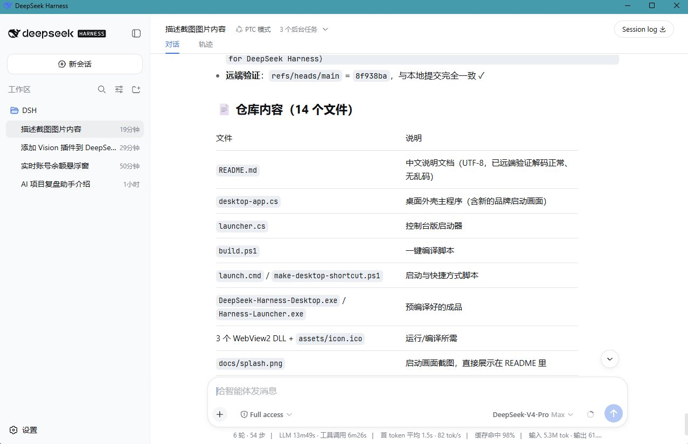
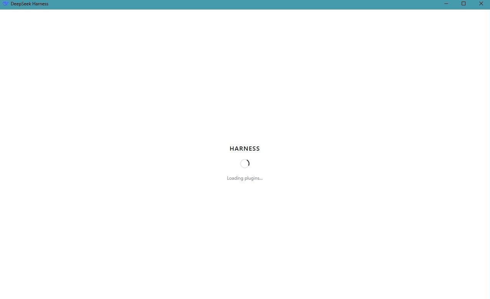

🖥️ DeepSeek Harness 桌面版：一个 WebView2 外壳的开发记录
发布时间：2026年8月15日
给 DeepSeek Harness 做一个 Windows 桌面外壳——基于系统自带的 WebView2 承载 Web UI， 自动拉起本地服务，内置品牌启动画面，双击即用。这篇文章记录整个设计与实现过程。
为什么要做桌面版
平时使用 DeepSeek Harness 需要先启动本地服务（pnpm dsh web），
再用浏览器打开 127.0.0.1:3080。步骤不多，但每次都要记得端口、
手动开终端，用起来总像在「调试」而不是「使用」。
所以我想要一个真正的桌面应用：双击图标、看到启动画面、直接进入界面——像普通软件一样。
技术选型
- 🪟 WebView2：Windows 10 / 11 系统自带 Runtime，无需打包 Chromium，体积小、更新跟系统走。
- ⚙️ C# + WinForms：用系统自带的 .NET Framework csc 就能编译，不需要装 IDE 或额外工具。
- 🔗 复用官方 Web UI：核心能力、插件系统和界面全部来自 deepseek-ai/deepseek-harness，外壳只负责桌面集成。
启动画面
桌面应用的「第一印象」很重要。启动画面做成了浅色背景 + HARNESS 字标 + "Loading plugins..."，与 Web 端启动页视觉一致——从双击到进入界面，全程没有深色闪屏和白屏闪烁。
服务生命周期管理
外壳需要和本地服务配合，这里处理了几个细节：
- 🚀 启动时自动运行
pnpm dsh web。 - 🔁 如果服务已经就绪（比如用户自己起的），直接接管页面，不重复启动。
- ⏱️ 服务 120 秒未就绪时弹出超时提示，而不是无限等待。
- 🛑 退出时只结束本外壳启动的服务，不影响其他已经运行的服务。
使用与打包
使用上保持简单：从 Releases 下载 zip，把 exe 和三个 DLL 复制到主仓库根目录，双击即可；
还可以运行 make-desktop-shortcut.ps1 一键生成桌面快捷方式。
编译则只需一条 .\build.ps1。
运行截图


开发收获
- Windows 桌面集成：WebView2 窗口、进程生命周期管理、桌面快捷方式。
- 「应用感」来自细节：启动画面、无闪屏、超时兜底，都是用户体验的一部分。
- 用最小依赖完成目标：不引入 Electron，只靠系统自带能力。